5. Raspberry Piの設定¶


5.2. 組み立て¶
SDカードをRaspberry Piに装着します。向きがあるので注意して下さい。
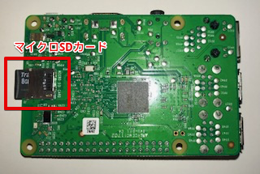電源プラグをマイクロUDBソケットに差し込みます。

電源を投入すると、SDカードスロット右の赤LEDが点灯します。OSブートが始まり、SDカードへのアクセスがあると、、緑LEDが点滅します。
5.3. WiFi接続¶
お手持ちのPCをハンズオンのWiFiアクセスポイントに接続します。WiFi設定は、下記になります。
- SSID：awshandson
- パスフレーズ：awshandson
お手持ちのPCにインストールした、VNC Viewer を起動して下さい。下記の画面が表示されます。
接続先として、’raspberrypi-<参加者番号>.local’と入力して[エンター]を押します。
「一人で1つのAWSアカウントを利用する場合は「参加者番号」は “01” としてください。」 としていましたが、ここでの<参加者番号>は、SDカードに書かれた番号にして下さい・。

Username と、Password を入力して [OK] を押します。

無事、Raspberry Piに接続出来たら、Raspberry Piのリモート画面が表示されます。

警告が出ますが、無視して、[OK] を押して下さい。
Raspberry Piは、WiFi SSID = awshandson に接続するように設定してあります。 VNC Viewerでの接続ができれば、Raspberry PiもWiFiに接続出来ているはずです。
うまく接続出来ない場合は、Ethernet接続を試してみましょう。 Raspberry PiのEthernetは、固定IPアドレス 192.168.11.100 に設定されています。 PCとRaspberry PiをEthernetで接続し(ストレートケーブルでも構いません。)
PC側のIPアドレスを、固定IP 192.168.11.xxx に設定して下さい。 VNC Viewerの接続先を、192.168.11.100 にして、接続してみてください。
シリアルケーブルでコンソール接続する場合、下記のファイルにWiFi設定が入っていますので、適宜変更して下さい。
/etc/wpa_supplicant/wpa_supplicant.conf
5.5. Raspberry Piの環境を初期化する¶
5.5.1. コンソールを表示¶
コンソールは、メニューバーのアイコンをクリックすると表示されます。
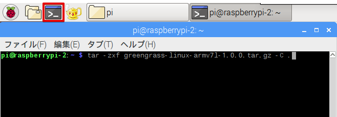コンソールに下記を入力し、greengrassとAWS IoT Device SDKの環境をクリーンアップします。
./handson_clean
5.6. ダウンロード済みの証明書をRaspberry Piにコピー¶
Greengrassコア、センサーデバイス、アラートデバイス用に証明書を３セットダウンロードしていました。 Raspberry Piに転送、します。VNC Viewrのタイトルバーの中心にマウスを移動させると、ツールが表示されます。矢印が交差したアイコンをクリックします。
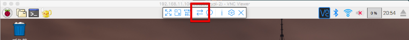ファイル転送の画面が表示されます。 [Send files...] ボタンを押します。

ファイルの選択画面が表示されるので、全ての証明書を選択して、[Open] を押します。

ファイルがRaspberry Piのデスクトップに転送されます。

設定のおさらい、
ここで、設定のおさらいをしてみましょう。Raspberry Piの設定邸のために記録した内容は、下記の様になっているはずです。この内容をテキストファイルにして、Raspberry Piに転送しておきましょう。PC側でコピーしてVNCの画面にペーストすることも出来ますが、うまくいかないこともあり、ファイルを転送することをお勧めします。
Greengrass core device: GGC_Thing-01
"certPath": "xxxxxxxxxx-certificate.pem.crt",
"keyPath": "xxxxxxxxxx-private.pem.key",
"thingArn": "arn:aws:iot:us-west-2:000000000000:thing/GGC_Thing-01"
AWS IoT endpoint
"endpoint": "xxxxxxxxxxxx.iot.us-west-2.amazonaws.com"
Alarm Device: Alert-01
"device_certificate_relative_path": "certs/handsonAlarm/yyyyyyyyyy-certificate.pem.crt",
"device_private_key_relative_path": "certs/handsonAlarm/yyyyyyyyyy-private.pem.key",
Sensor Device: Sensor-01
"device_certificate_relative_path": "certs/handsonSensor/zzzzzzzzzz-certificate.pem.crt",
"device_private_key_relative_path": "certs/handsonSensor/zzzzzzzzzz-private.pem.key",
Raspberry Pi 上の設定ファイルは、下記の3つになります。
- Greengrassコアの設定 /greengrass/configuration/config.json
- センサーデバイスの設定 /aws-iot-device-sdk-cpp/common/HandsonSensorConfig.json
- アラートデバイスの設定 /aws-iot-device-sdk-cpp/common/HandsonAlarmConfig.json
5.7. Raspberry Pi上のファイル¶
Raspbery Piのメニューバーをクリックしてファイラーを開きます。

- aws-iot-device-sdk-cpp AWS IoT Device SDK C++ のパスです。センサーデバイス、アラートデバイスのアプリが存在します。 証明書を格納するパスや、設定ファイル、アプリのソースコードが入っています。
- greengrass-linux-armv7l-1.0.0.tar.gz ARMv7版のAWS Greengrass パッケージです。 証明書を格納するパスや、設定ファイル、Greengrassコアが入っています。
下記のコマンドで解凍して Greengrassパッケージを解凍して下さい。
tar -zxf greengrass-linux-armv7l-1.0.0.tar.gz -C .
5.8. Greengrassコアの設定と起動¶
Greengrassコアの設定は、~/greengrass/configuration で行います。
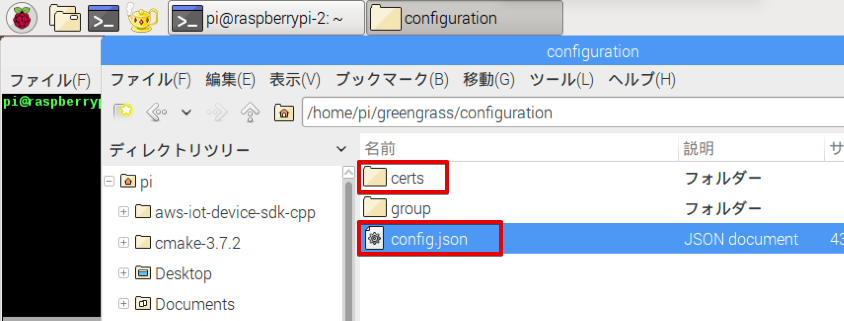5.8.1. Greengrassコア用の証明書をコピー¶
~/greengrass/configuration/certs にGreengrassコア用の証明書をコピーして下さい。
コピーするファイルは、デスクトップ上の下記の３つのファイルになります。
- root-ca.pem
- xxxxxxxxxx-certificate.pem.crt
- xxxxxxxxxx-private.pem.key
5.8.2. 設定ファイルの修正¶
~/greengrass/configuration/config.json をダブルクリックします。Text Editorが開きます。
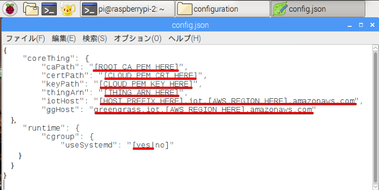赤線の部分を書き換えて下さい。
{
"coreThing": {
"caPath": "root-ca.pem",
"certPath": "xxxxxxxxxx-certificate.pem.crt",
"keyPath": "xxxxxxxxxx-private.pem.key",
"thingArn": "arn:aws:iot:us-west-2:000000000000:thing/GGC_Thing-01",
"iotHost": "xxxxxxxxxxxx.iot.us-west-2.amazonaws.com",
"ggHost": "greengrass.iot.us-west-2.amazonaws.com"
},
"runtime": {
"cgroup": {
"useSystemd": "yes"
}
}
}
“iotHost”は、AWS IoTのエンドポイント(endpoint)です。
“ggHost”のリージョン(AWS_REGION_HERE)も、us-west-2に書き換えて下さい。”useSystemd”は、yesにして下さい。
5.8.3. Greengrassを起動する¶
コンソールを開き、下記を入力して、Greengrassを起動します。
cd greengrass
sudo ./greengrassd start
Greengrassが正常に起動できれば、下記が表示されます。
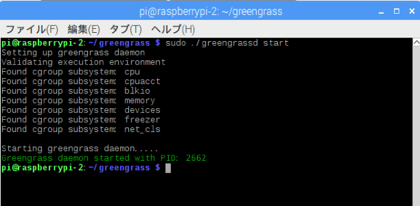エラーが出る場合、~/greengrass/configuration/config.json を確認して下さい。 証明書(“caPath”,”certPath”,”keyPath”)に誤りがあると、greengrassdの起動に失敗します。 “thingArn”,”iotHost”,”ggHost”に誤りがあっても、起動は成功しますが、デプロイに失敗します。
5.9. デバイスの設定とビルド¶
センサーデバイス、アラートデバイスは、AWS IoT Device SDK C++で作成します。今回のハンズオンでは、Device SDKの開発環境と、各デバイスのコードは、導入済みです。証明書を所定のパスにコピーし、設定ファイルを修正し、アプリケーションのビルドを行います。
5.9.1. デバイスの用の証明書をコピー¶
~/aws-iot-device-sdk-cpp/certs にDevice SDK用の証明書のパスがあります。
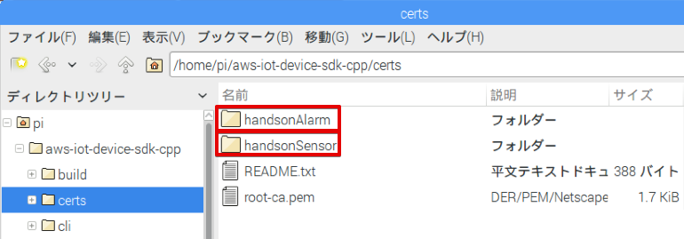アラートデバイス用の証明書は、handsonAlarm、センサーデバイス用の証明書は、handsonSensorにコピーして下さい。
root-ca.pem は、既に、コピー済みです。
~/aws-iot-device-sdk-cpp/certs/handsonAlarm にコピー
- yyyyyyyyyy-certificate.pem.crt
- yyyyyyyyyy-private.pem.key
~/aws-iot-device-sdk-cpp/certs/handsonSensor にコピー
- zzzzzzzzzz-certificate.pem.crt
- zzzzzzzzzz-private.pem.key
5.9.2. 設定ファイルの修正¶
設定ファイルは、下記になります。
- ~/aws-iot-device-sdk-cpp/common/HandsonAlarmConfig.json
- ~/aws-iot-device-sdk-cpp/common/HandsonSensorConfig.json
Text Editorで開いて下さい。
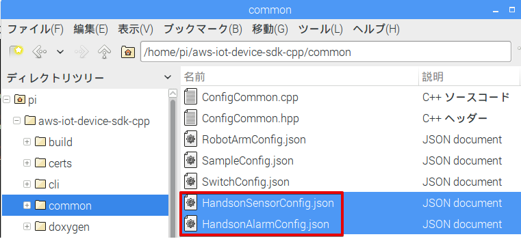アラートデバイス用設定ファイル：HandsonAlarmConfig.json
赤字の部分を書き換えて下さい。
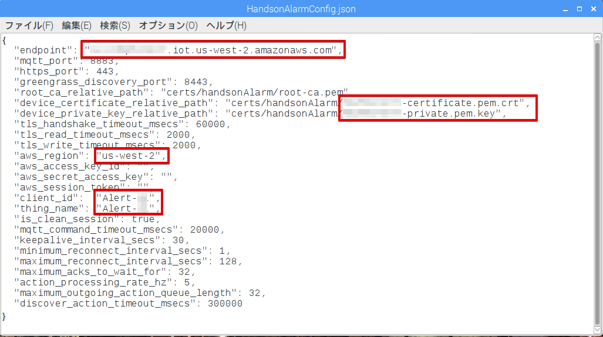“client_id”、”thing_name”は、アラートデバイス名 Alert-<参加者番号> になります。
センサーデバイス用設定ファイル：HandsonSensorConfig.json
同様に、赤字の部分を書き換えて下さい。
5.9.3. Device SDKアプリケーションのビルド¶
センサーデバイス、アラートデバイス用アプリケーションのビルドを行います。
古い実行ファイルが残っているとビルドに失敗するので、下記のコマンドで、消去します。
sudo rm -rf ~/aws-iot-device-sdk-cpp/build/bin/
コンソ-ルを開き、~/aws-iot-device-sdk-cpp/build に移動して下さい。
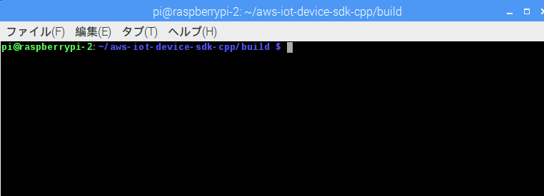下記を入力し、リターンを押します。アラートデバイス用アプリがビルドされます。
make handson-alarm-sample
ビルに成功すると、下記の様に表示されます。
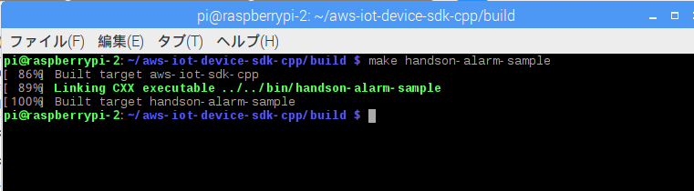~/aws-iot-device-sdk-cpp/build/bin 内に、実行ファイル handson-alarm-sample が生成されていることを確認します。
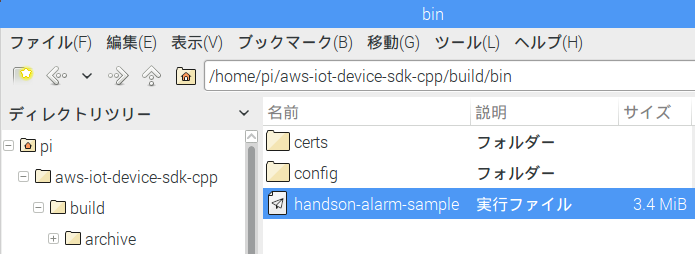同様に、センサーデバイス用の用アプリもビルドします。
make handson-sensor-sample
~/aws-iot-device-sdk-cpp/build/bin 下に、実行ファイル handson-sensor-sample が生成されていることを確認します。
~/aws-iot-device-sdk-cpp/build/bin/certs 下に、証明書がコピーされているかも確認してください。
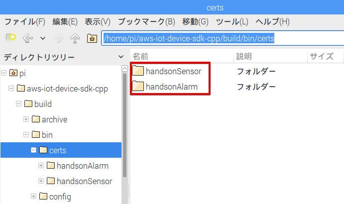